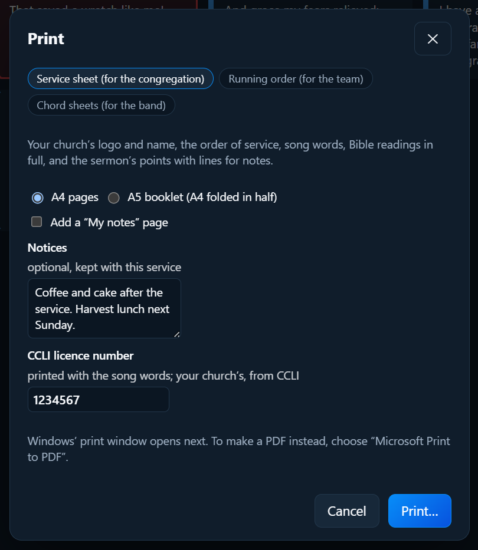

Building a service
Printing
Click Print in the Service column. There are three kinds of printout.

A service sheet, for the congregation
A handout with:
- your church’s logo and name, and the service’s name
- the order of service
- the words of each song, laid out by verse and chorus, with the author and CCLI number
- the Bible readings in full
- the sermon title, the preacher, and the main points with lines for notes (the points come from the sermon’s slides)
- notices, if you type some in (they’re kept with the service)
- the line “Song words reproduced under CCLI Licence No. …”, if you enter your church’s licence number
Choose the size:
- A4 pages: printed as normal.
- A5 booklet (A4 folded in half): PraiseAV arranges the pages so that, printed on both sides, the pile folds into a booklet with the pages in order. In the print window, choose print on both sides and flip on short edge.
Tick Add a “My notes” page for a ruled page at the end.

A logo for paper
A logo made for the screen often has white or light words, which disappear on white paper. If your church has a version with dark words, use that for printing: in the Media tab, click it and choose Use for printing. See Media.
The running order, for the team
A list of everything in the service, with song details. Tick:
- Include song words: handy for the band
- Include the preacher’s notes
Chord sheets, for the band
Big, bold chords over the words, for a music stand. Choose Chord sheets (for the band) in the Print window to print every song in the service that has chords:
- A short list of the songs comes first, in service order, with the key of each. Songs that don’t have chords yet say no chords yet, so nobody wonders where they went.
- Each song starts on a new page, with its title, writers, copyright and CCLI song number, and the key in large letters at the top.
- The chords are in the key the band plays it in, not just the key they’re written in. If the song has a capo, the sheet shows the chord shapes to play and says so at the top: Capo 2 · play G shapes (sounds in A).
- Every verse is there with its chords. A verse without chords of its own gets the first verse’s chords, as on the band’s screen, and an intro of chords only is kept.
- PraiseAV tries not to split a verse or chorus across two pages.
To print just one song, open it (Edit song) and click Print chord sheet… at the bottom of the song window. It prints the song as it is in the window, in the key and capo you’ve chosen there, even before you save.
The key and the capo are set in the song window: see Chords for the band.
Saving as a PDF
Windows’ print window opens after you click Print…. To make a PDF (to email to the band, or put on your website), choose the printer Microsoft Print to PDF.